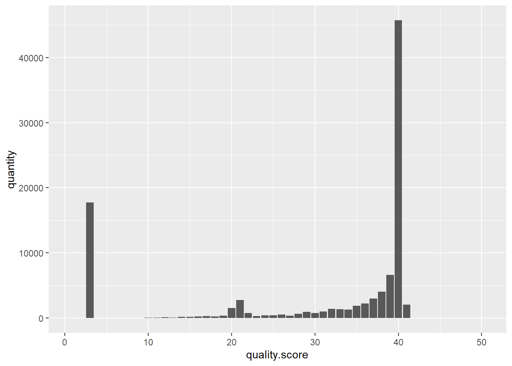

Read the genome into memory.
def readGenome(filename):
genome = ''
with open(filename, 'r') as f:
for line in f:
if line[0] != '>':
# rstrip method removes white spaces and new line at end of line
genome += line.rstrip()
return genome
genome = readGenome('data/lambda_virus.fa')
genome[:100]## 'GGGCGGCGACCTCGCGGGTTTTCGCTATTTATGAAAATTTTCCGGTTTAAGGCGTTTCCGTTCTTCTTCGTCATAACTTAATGTTTTTATTTAAAATACC'Count the frequency of each base using a dictionary.
counts = {'A': 0, 'C': 0, 'G': 0, 'T': 0}
for base in genome:
counts[base] += 1
print(counts)## {'A': 12334, 'C': 11362, 'G': 12820, 'T': 11986}Use the collections module to count the bases.
import collections
collections.Counter(genome)## Counter({'G': 12820, 'A': 12334, 'T': 11986, 'C': 11362})To read a FASTQ file and pull out the sequences and quality scores, use the below function:
def readFastq(filename):
sequences = []
qualities = []
with open(filename) as fh:
while True:
# Read this line but dont save it
fh.readline()
# Read this line and save
seq = fh.readline().rstrip()
fh.readline()
qual = fh.readline().rstrip()
# If you are at the end of the file, break
if len(seq) == 0:
break
sequences.append(seq)
qualities.append(qual)
return sequences, qualitiesseqs, quals = readFastq('data/ERR037900_1.first1000.fastq')print(seqs[:5])## ['TAACCCTAACCCTAACCCTAACCCTAACCCTAACCCTAACCCTAACCCTAACCCTAACCCTAACCCNAACCCTAACCCTAACCCTAACCCTAACCCTAAC', 'TAACCCTAACCCTAACCCTAACCCTAACCCTAACCCTAACCCTAACCCTAACCCTAACCCTAACCCNAACCCTAACCCTAACCCTAACCCTNACCCTAAC', 'TAACCCTAACCCTAACCCTAACCCTAACCCTAACCCTAACCCTAACCCTAACCCTAACCCTAACCCNAACCCTAACCCTAACCCTAACCCTAACCCTAAC', 'TAACCCTAACCCTAACCCTAACCCTAACCCTAACCCTAACCCTAACCCTAACCCTAACCCTAACCCNAACCCTAACCCTAACCCTAACCCTAACCCTACC', 'AACCCTAACCCTAACCCTAACCCTAACCCTAACCCTAACCCTAACCCTAACCCTAACCCTAACCCTNACCCTAACCCTAACCCTAACCCTAAACCTAACC']print('')print(quals[:5])## ['HHHHHHHHHHHHHHHHHHHHHHHHHHHHHHHHHHHHHHHHHHHGFHHHFHFFHHHHHGHHFHEH@4#55554455HGFBF<@C>7EEF@FBEDDD<=C<E', 'HHHHHHHHHHHHHHHHHHHHHHHHHHHHHHHHHHHHHHHHHHHHHHHHHHHHHHHHCHHHHEHHBA#C>@54455C/7=CGHEGEB;C############', 'HHHHHHHHHHHHHHHHHHHHHHHHHHHHHHGHHHHHHHHHHHHHDHHHDEHHHHFGIHEHEGGGF4#45655366GIGEHAGBG################', 'HHHHHHHHHHHHHHHHHHHHHHHHHIHHHHHHHHHHHHHHHHHHHHHHIHHHHHIHFHHHIHHHHD#ECA54655GGIBH?BD@+BCBF?5A=::>8?##', 'HHHHHHHHHHHHHHHHHHHHHHHHHHHHHHHHHHHHHHHHHHHHHHHIHIHEHHIGHIFFHIIGF6#555:2=7=CB;?3CAACBAC2B###########']In a FASTQ file, you can convert a character to an integer by using the following code:
def QtoPhred33(Q):
''' Turn Q into Phred+33 ASCII-encoded quality '''
return chr(Q + 33)
def phred33ToQ(qual):
''' Turn Phred+33 ASCII-encoded quality into Q '''
# ord() takes a string and converts it to and integer equivalent
return ord(qual)-33phred33ToQ('#')## 2‘2’ is a low quality score and means that the program has low confidence that this is the correct base.
Next, we will create a histogram of the quality scores.
def createHist(qualities):
hist = [0] * 50
for qual in qualities:
for phred in qual:
q = phred33ToQ(phred)
hist[q] += 1
return histh = createHist(quals)h## [0, 0, 17723, 0, 2, 11, 11, 28, 23, 55, 100, 111, 86, 174, 185, 272, 317, 259, 390, 1523, 2782, 762, 286, 413, 403, 538, 351, 694, 971, 777, 1024, 1449, 1341, 1312, 1916, 2233, 3025, 4043, 6640, 45696, 2074, 0, 0, 0, 0, 0, 0, 0, 0, 0]type(h)## <class 'list'>library(reticulate)
py$h## [1] 0 0 17723 0 2 11 11 28 23 55 100 111
## [13] 86 174 185 272 317 259 390 1523 2782 762 286 413
## [25] 403 538 351 694 971 777 1024 1449 1341 1312 1916 2233
## [37] 3025 4043 6640 45696 2074 0 0 0 0 0 0 0
## [49] 0 0library(ggplot2)
library(dplyr)df <- data.frame('quality score' = c(1:50), 'quantity' = py$h)df## quality.score quantity
## 1 1 0
## 2 2 0
## 3 3 17723
## 4 4 0
## 5 5 2
## 6 6 11
## 7 7 11
## 8 8 28
## 9 9 23
## 10 10 55
## 11 11 100
## 12 12 111
## 13 13 86
## 14 14 174
## 15 15 185
## 16 16 272
## 17 17 317
## 18 18 259
## 19 19 390
## 20 20 1523
## 21 21 2782
## 22 22 762
## 23 23 286
## 24 24 413
## 25 25 403
## 26 26 538
## 27 27 351
## 28 28 694
## 29 29 971
## 30 30 777
## 31 31 1024
## 32 32 1449
## 33 33 1341
## 34 34 1312
## 35 35 1916
## 36 36 2233
## 37 37 3025
## 38 38 4043
## 39 39 6640
## 40 40 45696
## 41 41 2074
## 42 42 0
## 43 43 0
## 44 44 0
## 45 45 0
## 46 46 0
## 47 47 0
## 48 48 0
## 49 49 0
## 50 50 0Don’t use geom_bar(), use geom_col(). The function geom_bar() makes the height of the bar proportinal to the number of cases in each group, or if the weight asthetic is supplied, the sum of the weights. If you want hights of the bars to represent values in the data, use geom_col().
p <- df %>% ggplot(aes(x = quality.score, y = quantity)) + geom_col()
p